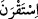

gemilerden üstün tutulduğuna delâlet etmektedir.
Âyetteki “zikir”den murad, kalplerin zikridir. Çünkü zikirde aslolan kalbî zikirdir ve
ona itibar edilir. Hadis-i şerifte şöyle buyrulmuştur: “Allah Teâlâ sizin sûretlerinize ve
amellerinize değil, bilakis kalplerinize ve niyetlerinize nazar eder.”[145] Böylece
“Allah’ın nimetine hamdetme” yerine “Rabbinizin nimetini anasınız” ifâdesinin tercih
ediliş sebebi de ortaya çıkmış olmaktadır. Mânâ şudur: “Onların sırtlarına bindiğiniz
zaman kalplerinizle Rabbinizin nimetini anasınız, bu nimetleri itiraf ederek
büyüklüğünü takdir edesiniz. Allah’ı gönülden hatırladıktan sonra da lisânen O’na
hamdedesiniz. Bundan hayret ve hayranlık duyarak «bunu bizim hizmetimize vereni
tesbih ve takdis ederiz» diyesiniz.” Yani bu gemi ve hayvanları elimizin altına, onlara
binmemiz, karada ve denizde yol almamız için emrimize verip merhamet gösteren Allah
her şeyden pâk; temiz ve münezzehtir.
“Yoksa biz bunlara güç yetiremezdik.” Yani biz onları hizmete boyun eğdirmeye takat
getiremezdik. Bizde bu hayvanı ve bu gemiyi hizmete yaklaştırıp zapt u rabt altına
alacak güç yoktur. Kudret ve hikmetiyle bu binekleri bize mutî ve âmâde kılarak
hizmetimize veren Allah’ın şânı ne yücedir. Bu ifâde, Allah’ın nimetini anmanın
tamamlayıcı unsurlarındandır. Çünkü bu nimete mazhar olan insan, bu nimeti elde
etmekten âciz olduğunu itiraf etmeksizin, ne o nimetin ne de o nimeti verenin kadr ü
kıymetini bilemez.
Kamusta şöyle denilmektedir: “
/akrane li’l-emri” ifâdesi “ona tâkat getirdi ve
kuvvet buldu” demektir. “
/istakrane” de böyledir. “
/akrane ‘ani’l-emri”
“zayıf oldu” anlamında olup diğerine tam zıt bir mânâ ifâde eder. “__WORD__, bir şeye gücü
yetmek, güç yetirmek demektir.
Keşfü’l-Esrâr’da şöyle denilmiştir: Birini zapt edip kuvvette ona denk olduğunda ve
ona akran olduğunda: “
/akrantü’r-racüle” denilir. Başkaları şöyle demiştir: Bu
kelimenin aslı “kişinin bir şahsı kendi karîni ve akranı olarak görmesi” demektir. Çünkü
güçlü ve zorlu biri, zayıf ve güçsüz olana akran olmaz. Yani bir şeyi kendi akranı gören
kimseye o şey ağır ve zor gelmez. İşte “ona güç yetirdi” mânâsı budur.
14. Biz şüphesiz Rabbimize döneceğiz (demelisiniz).
“Biz şüphesiz” ölümle “Rabbimize döneceğiz”, sonunda tabut denilen bir binek
üzerinde Cenâb-ı Hakk’a döneceğiz ve bu binek dünya bineklerinin sonuncusudur,
demelisiniz. Şâirin ifâdesiyle:
Akıllı ol ve dizginini çekerek yürü.